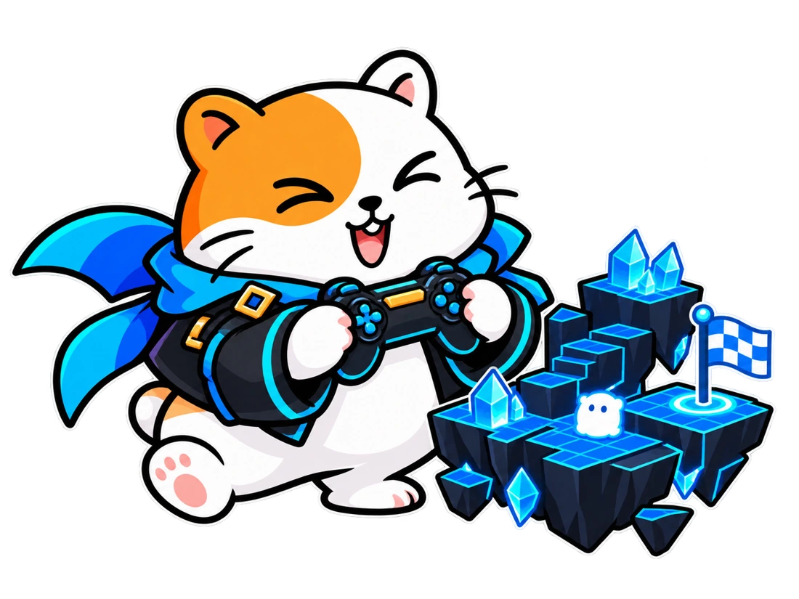
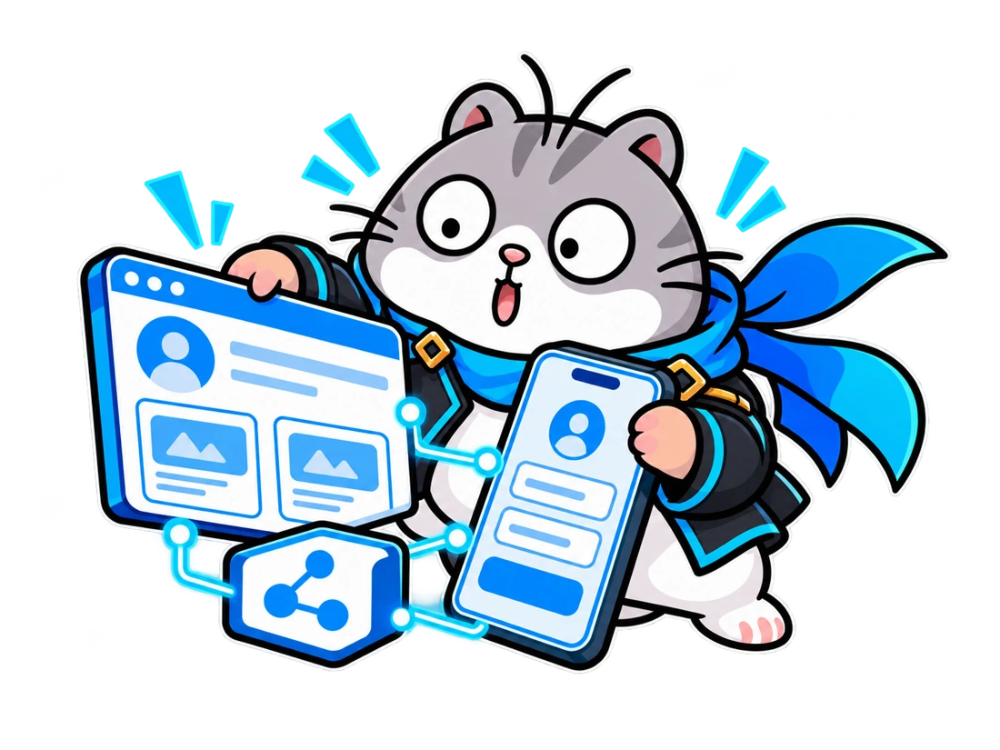
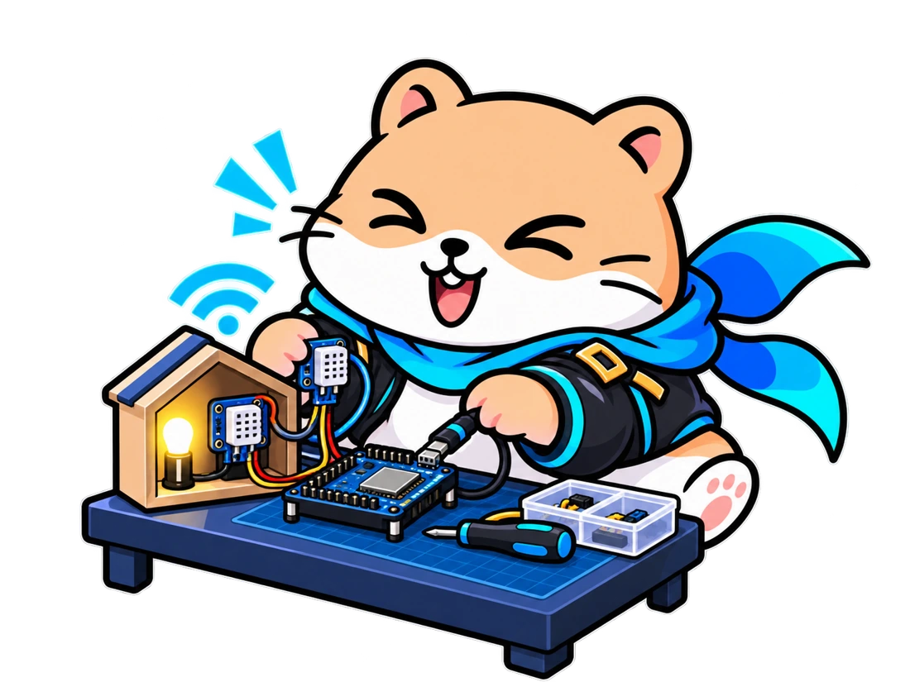
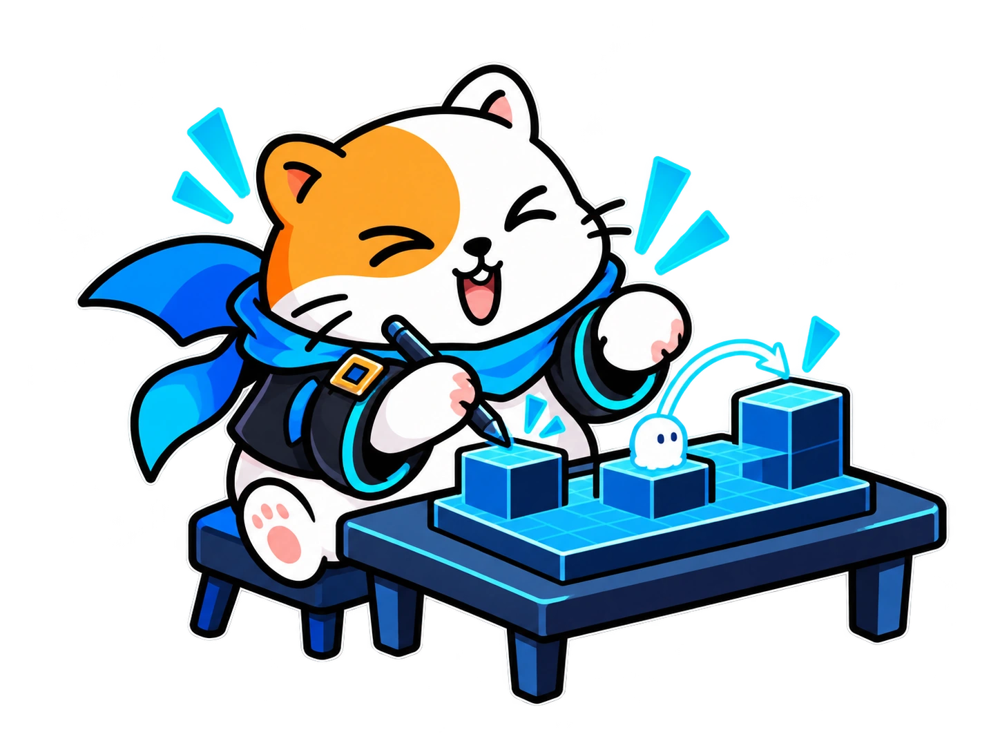
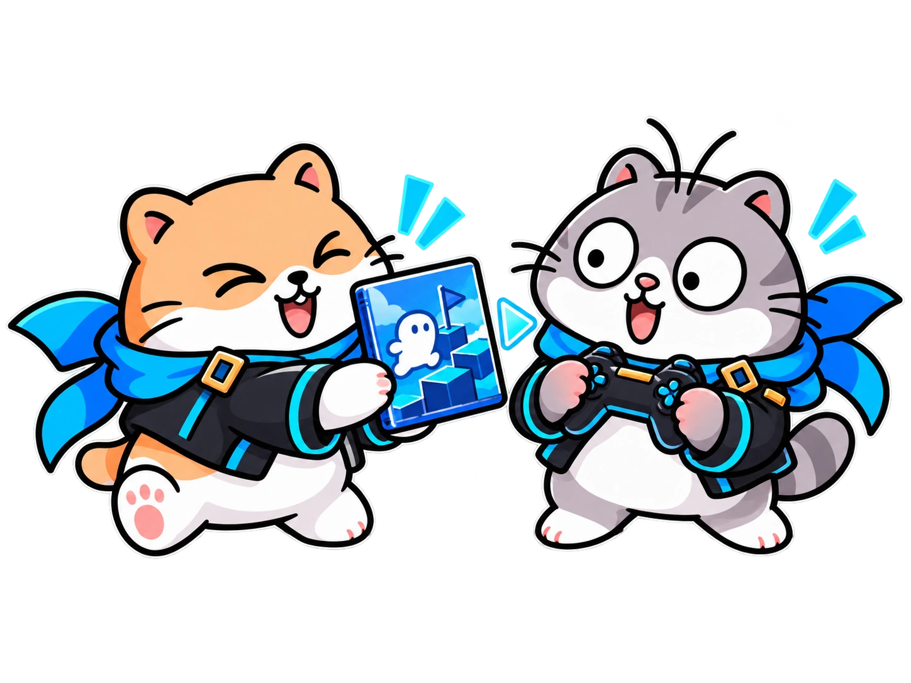
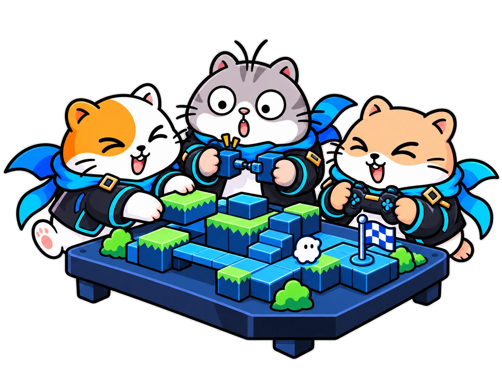
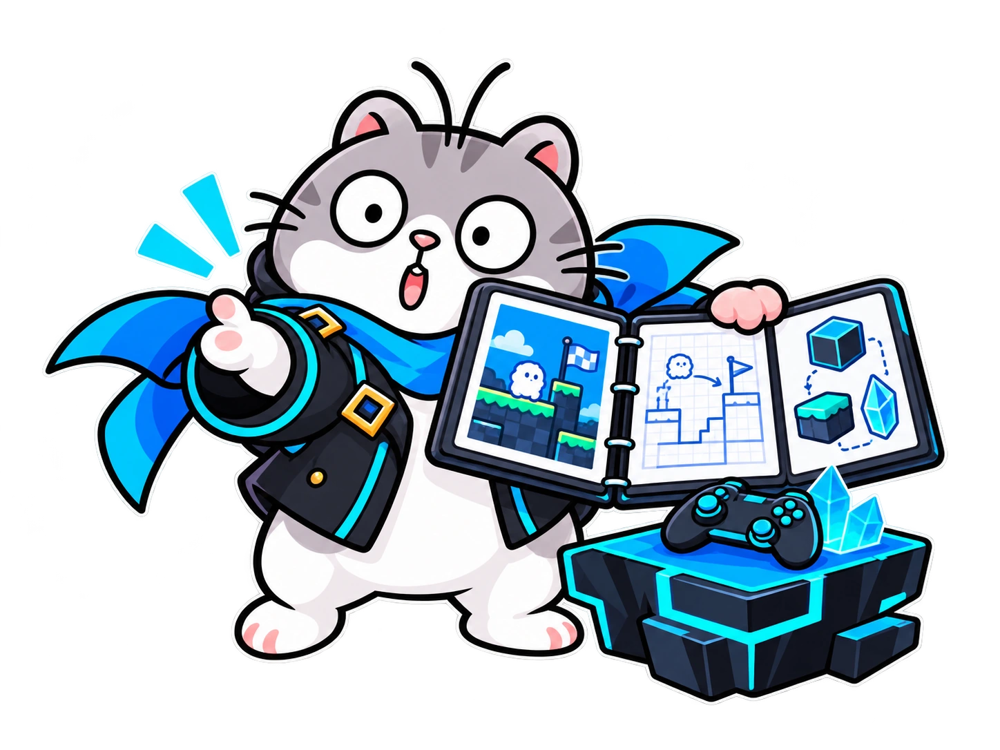
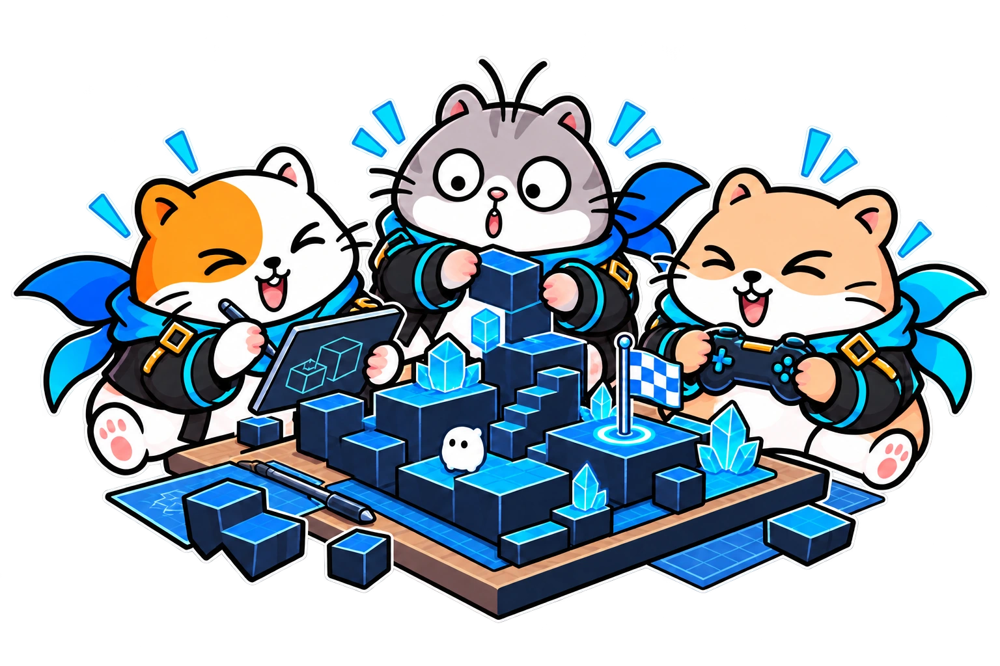
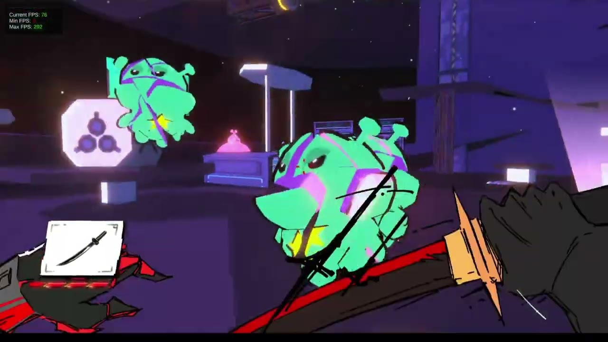
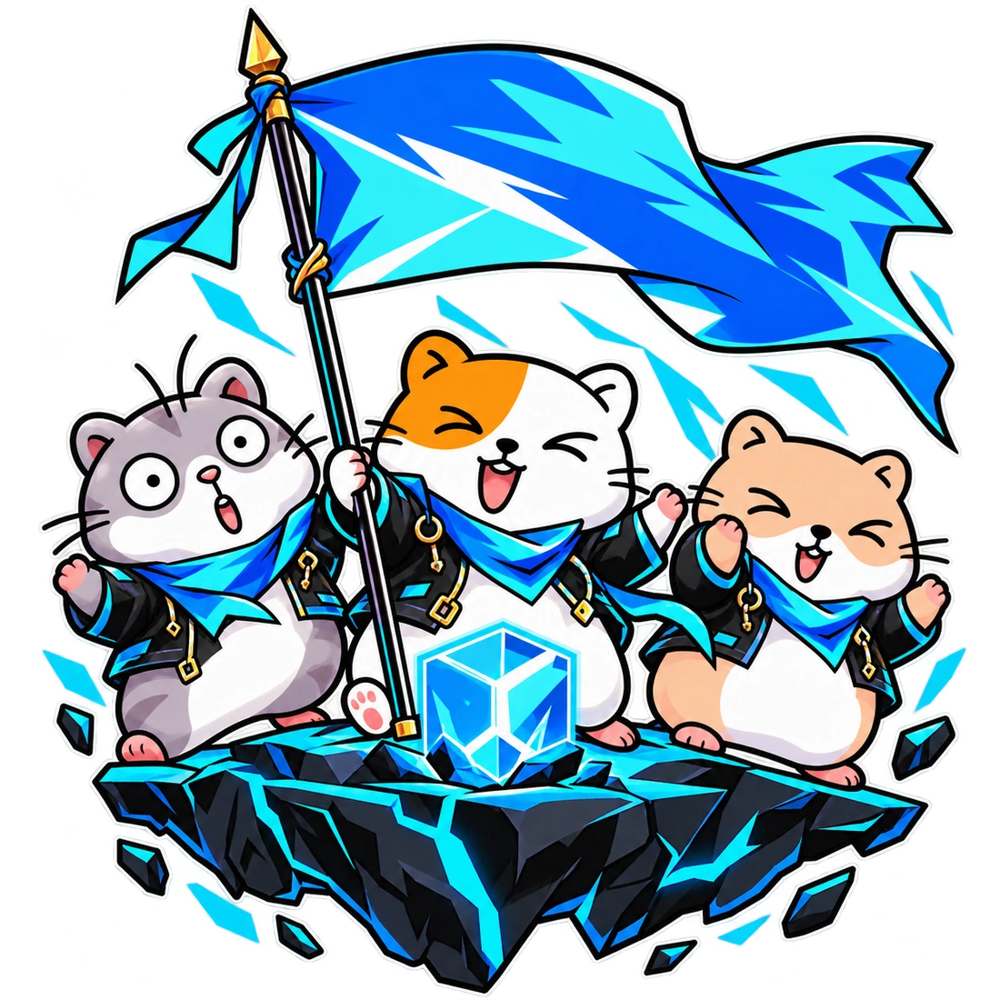

GAME
สร้างเกมที่คนเล่นได้
ออกแบบวิธีเล่น ตัวละคร และด่าน แล้วประกอบเป็นเกมของคุณ
ดูเส้นทางสายนี้ ↗1 YEAR. YOUR IDEA. YOUR REAL PRODUCT.
เลือกสร้าง Game, Web/App หรือ IoT
ลงมือทำโปรเจกต์ที่ใช้ได้จริง พร้อมนำเสนอผลงาน

CHOOSE WHAT YOU BUILD.
ชอบสร้างโลก สร้างหน้าจอ หรือสร้างอุปกรณ์?
เริ่มจากสิ่งที่อยากทำ แล้วพัฒนาให้ใช้งานได้

GAME
ออกแบบวิธีเล่น ตัวละคร และด่าน แล้วประกอบเป็นเกมของคุณ
ดูเส้นทางสายนี้ ↗
WEB / APP
ออกแบบหน้าจอ เชื่อมข้อมูล และทำให้แต่ละปุ่มใช้งานได้จริง
ดูเส้นทางสายนี้ ↗
IoT
เชื่อมเซนเซอร์ เขียนคำสั่ง แล้วให้อุปกรณ์ตอบสนองสิ่งรอบตัว
ดูเส้นทางสายนี้ ↗เส้นทาง 1 ปี

เดือน 1–3
ศึกษาเคสธุรกิจ เข้าใจผู้ใช้ และพิสูจน์ไอเดีย
ดูหลักสูตร ↗
เดือน 4–6
เลือก Game, Web/App หรือ IoT แล้วแบ่งบทบาทสร้าง
ดูหลักสูตร ↗
เดือน 7–9
รับข้อมูลจากผู้ใช้ ปรับคุณภาพ และวางแผนสื่อสาร
ดูหลักสูตร ↗
เดือน 10–12
สร้างการมีส่วนร่วม เล่าจุดเด่น และฝึก Pitch
ดูหลักสูตร ↗FROM SOLO TO SQUAD.
ออกแบบ เขียนโค้ด และแบ่งงาน
รวมทักษะของแต่ละคนให้เป็นผลงานเดียวกัน

ออกแบบวางหน้าตาและวิธีใช้งาน
ประกอบเชื่อมแต่ละส่วนให้ทำงานได้
ทดสอบตรวจการใช้งานและแก้จุดติดขัด
ภาพตัวอย่างการแบ่งงานในสาย Game · ทุกสายฝึกวางแผน สร้าง และทดสอบร่วมกัน
มีโปรเจกต์ที่สาธิตการทำงานได้จริง
เล่าทักษะและส่วนที่รับผิดชอบจากงานที่ลงมือทำ
เก็บชิ้นงานและกระบวนการ สำหรับพอร์ตและเวทีที่สนใจ
TAKE YOUR PROJECT OUTSIDE.
เลือกเวทีให้เหมาะกับสายและโปรเจกต์
ฝึกนำเสนอผลงานให้คนเห็นคุณค่า
Game Jam และ Game Show สำหรับสาย Game · NSC และ YSC เลือกตามประเภทโครงงานและเกณฑ์ผู้จัด เป็นเวทีเป้าหมายเพื่อเตรียมความพร้อม การเข้าร่วมขึ้นอยู่กับกำหนดการ คุณสมบัติ และเกณฑ์ของผู้จัดแต่ละปี ไม่รวมการรับประกันรางวัลหรือการเข้าศึกษา
ฝึกทำเกมภายใต้เวลาจำกัด ร่วมทีม แลกเปลี่ยนไอเดีย และเก็บประสบการณ์การสร้างเกมในกิจกรรมระดับนานาชาติ
ฝึกแบ่งหน้าที่ สร้างเกม และนำเสนอผลงานกับสมาชิกในชุมชน Hamster Hub
เตรียมแนวคิดซอฟต์แวร์ กระบวนการพัฒนา และการนำเสนอให้พร้อมศึกษาการส่ง NSC ตามเกณฑ์ของรุ่นนั้น
ต่อยอดโจทย์ที่เหมาะสมเป็นโครงงาน ฝึกตั้งคำถาม เก็บข้อมูล และสื่อสารกระบวนการสำหรับการศึกษาการส่ง YSC
เตรียมเดโมและการเล่าเกมให้คนเข้าใจ เพื่อมองหาโอกาสแสดงผลงานและรับฟังผู้เล่นในงานอุตสาหกรรมเกม
MADE IN THE COMMUNITY.
ตัวอย่างเกมจากสมาชิก Hamster Hub
ผลงานในชุมชน ไม่ใช่ผลลัพธ์ที่รับประกันของคอร์สนี้
 ▶เปิดคลิป ↗
▶เปิดคลิป ↗SEAL STUDIO

▶เปิดคลิป ↗RE_SLASH
 ▶เปิดคลิป ↗
▶เปิดคลิป ↗PXCoN
ทั้งสามคลิปเล่นแบบปิดเสียง · ลากเพื่อเลือก · กดภาพเพื่อเปิดคลิป
BEFORE YOU START.
รู้ให้ชัด แล้วค่อยตัดสินใจ
Star_up เปิดรับสมัครเดี่ยวเท่านั้น ไม่ต้องมีทีมมาก่อน ส่วนการแบ่งหน้าที่ทำโปรเจกต์ร่วมกันเป็นกิจกรรมระหว่างเรียน
เริ่มจากโลก Startup ธุรกิจ และไอเดีย ก่อนพัฒนาต้นแบบตามสายที่เลือก ส่งพื้นฐานและสิ่งที่อยากสร้างให้ทีมประเมินความเหมาะสมก่อนสมัครได้
ราคา 24,990 บาท สอบถามวันเปิดรุ่น ตารางเรียน รูปแบบเรียน การชำระเงิน และค่าใช้จ่ายเกี่ยวกับอุปกรณ์หรือกิจกรรมกับทีมผ่าน LINE ก่อนสมัคร
เลือกสาย Game, Web/App หรือ IoT ฝึกคิดธุรกิจ สร้างต้นแบบ แบ่งบทบาทพัฒนา ทดสอบกับผู้ใช้จริง ทำการตลาด และ Pitch เพื่อหาแรงสนับสนุน ดูหัวข้อครบทั้ง 12 เดือนได้ในหน้าหลักสูตร
ไม่รับประกันรางวัล การคัดเลือก หรือการเข้าศึกษา 5 เวทีเป็นเป้าหมายให้เตรียมความพร้อม การสมัครขึ้นอยู่กับกำหนดการ คุณสมบัติ และเกณฑ์ของผู้จัดในแต่ละปี
มีหัวข้อครบ 12 เดือนแล้ว ตั้งแต่โลก Startup และ Business Model ไปถึง Product Development, User Acceptance Test, Marketing และ Fund Raising ตาราง เวลาเรียน อุปกรณ์ และการแบ่งหัวข้อแต่ละสายยืนยันกับทีมก่อนสมัคร
อุปกรณ์ขึ้นอยู่กับสายที่เลือก ส่งสเปกคอมพิวเตอร์ให้ทีมประเมินได้ สาย IoT ให้สอบถามรายการบอร์ด เซนเซอร์ และค่าอุปกรณ์ก่อนสมัคร
YOUR NEXT LEVEL STARTS HERE.
ให้หนึ่งปีนี้มีทั้งทักษะ และโปรเจกต์ที่คุณสร้าง
และเรื่องราวที่คุณนำไปเล่าต่อได้
เปิดรับสมัครเดี่ยวเท่านั้น
สอบถามรุ่นเรียน ตารางเรียน รูปแบบการเรียน และเงื่อนไขค่าใช้จ่ายผ่าน LINE ก่อนสมัคร
